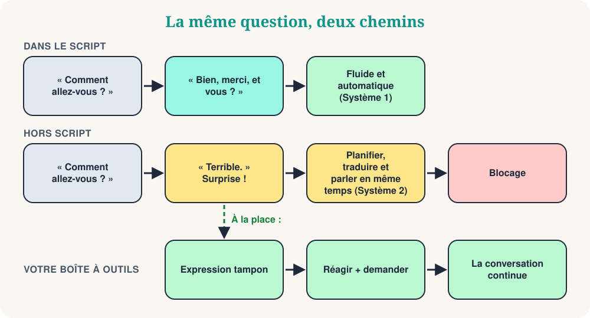

Dans mon club de conversation Mind Matters, nous explorons la psychologie de l'apprentissage des langues. Récemment, nous avons commencé par une courte vidéo qui nous a fait rire, puis réfléchir. Elle s'intitule « Quand le patient sort du script ». Un employé dit la salutation habituelle : « Comment allez-vous ? » Le patient répond calmement : « Terrible. » Et l'employé disjoncte : il bégaie, se trompe de mots, regarde partout.
Si vous apprenez une langue, vous connaissez ce moment. On vous pose une question de routine, vous donnez la réponse de routine, et soudain l'autre dit quelque chose que vous n'aviez pas préparé. Le vide total. Ce blocage est-il un phénomène réel ? La psychologie a une explication utile : la théorie des scripts.
Partie 1 : Qu'est-ce qu'un script ?
Dans les années 1970, les chercheurs en sciences cognitives Roger Schank et Robert Abelson ont proposé que nous stockions nos connaissances des situations quotidiennes sous forme de scripts : des séquences typiques d'événements, de rôles et d'attentes. Leur exemple classique est le restaurant :
- Vous entrez et attendez qu'on vous place.
- Vous lisez le menu et vous commandez.
- Vous mangez.
- Vous demandez l'addition et vous payez.
- Vous partez.
Personne ne vous enseigne cette liste, et personne ne l'oublie. Vous ne commandez pas le dessert avant le plat, et vous ne vous demandez pas qui paie. Les scripts économisent l'énergie mentale : la séquence est prévisible, on peut donc agir presque en pilote automatique.
La distinction popularisée par Daniel Kahneman aide ici (c'est une simplification, mais utile). Le comportement scripté est surtout rapide et automatique : le Système 1. Les situations nouvelles demandent le Système 2, lent et réfléchi. Dans une langue étrangère, le Système 2 travaille déjà dur rien que pour trouver les mots. C'est pourquoi les phrases mémorisées sont un terrain solide : « Comment ça va ? » « Bien, merci, et vous ? » ne coûte presque rien.
Partie 2 : Que se passe-t-il quand le script se brise ?

La conversation est une activité conjointe. Les psychologues Martin Pickering et Simon Garrod décrivent le dialogue comme un alignement interactif : en parlant, nous nous alignons inconsciemment l'un sur l'autre, dans les mots choisis, les structures employées et le sens supposé. Un script facilite cet alignement, car les deux personnes savent ce qui vient ensuite.
Quand votre interlocuteur dit « Terrible », la prédiction échoue. Vous devez alors comprendre un message inattendu, décider comment réagir, trouver les mots et les prononcer, tout cela en même temps, dans une langue pas encore automatique. Ajoutez la pression du regard des autres : votre mémoire de travail est saturée. Le blocage, le bégaiement et le « court-circuit de robot » sont simplement l'aspect extérieur de cette surcharge.
Deux choses à retenir. D'abord, le blocage ne prouve pas que vous êtes mauvais dans la langue. Les locuteurs natifs se figent aussi quand la conversation part dans une direction inattendue ; ils ont simplement plus de matériel automatique sur lequel s'appuyer. Ensuite, le problème est souvent le temps. Vous connaissez beaucoup de mots. Il vous manque les secondes.
Partie 3 : C'est hors script qu'on apprend
J'avais la même peur. Comme enseignant et comme élève, j'aimais les dialogues bien préparés. Après des années auprès d'apprenants d'anglais, de français, d'italien, de russe, de grec et d'autres langues, j'ai changé d'avis. Un dialogue mémorisé est une répétition. Un échange inattendu est de la vraie communication.
Le sociologue Erving Goffman a montré que l'interaction quotidienne ne consiste pas à suivre un texte. Les gens gèrent constamment la situation : ils interprètent ce que fait l'autre, s'ajustent, réparent les petites gênes et s'aident mutuellement à « sauver la face ». Improviser est une compétence humaine normale, pas un signe d'échec. Quand vous trébuchez hors script, vous exercez exactement cette compétence dans une nouvelle langue.
Votre boîte à outils hors script
Conseil 1 : Gagnez du temps avec des expressions tampons
Quand la question inattendue arrive, ne répondez pas tout de suite. Dites d'abord une courte expression automatique. Elle donne à votre cerveau deux ou trois secondes et sonne naturel, car les locuteurs natifs en utilisent tout le temps.
| Langue | Commencez par… | Puis ajoutez… |
|---|---|---|
| anglais | That's a good question… | Let me think for a second… |
| français | C'est une bonne question… | Voyons voir… laissez-moi réfléchir. |
| italien | Bella domanda… | Allora… vediamo… dammi un attimo. |
| espagnol | Buena pregunta… | A ver… déjame pensar. |
| russe | Хороший вопрос… | Так… дайте подумать. |
| grec | Καλή ερώτηση… | Για να δω… να το σκεφτώ λίγο. |
Choisissez une expression par langue et faites-en votre réflexe. Dites-la à voix haute dix fois, jusqu'à ce qu'elle ne demande plus aucune réflexion.
Conseil 2 : Visez la communication, pas la perfection
L'anxiété du script vient souvent du perfectionnisme : la croyance cachée que chaque phrase doit sonner comme un manuel. Quand quelqu'un sort du script, votre perfectionniste intérieur panique, car le dialogue répété est ruiné. Changez d'objectif. La langue n'est pas un spectacle, c'est un lien. Utilisez des mots plus simples, des gestes ou la périphrase : expliquer un mot qu'on ne connaît pas en le décrivant. Le but est de se comprendre, pas de gagner un prix de grammaire.
Conseil 3 : Apprenez des scripts flexibles, pas rigides
Si vous mémorisez un dialogue entier mot à mot, vous vous effondrez quand l'autre ne le suit pas. Apprenez plutôt des briques. Une brique très utile est l'échelle en trois étapes : réagir, demander, proposer. Elle fonctionne pour presque toutes les surprises.
| Langue | 1. Réagir | 2. Demander | 3. Proposer |
|---|---|---|---|
| anglais | Oh no… | What happened? | Do you want to talk about it? |
| français | Oh non… | Qu'est-ce qui s'est passé ? | Vous voulez en parler ? |
| italien | Oh no… | Che cosa è successo? | Vuoi parlarne? |
| espagnol | Vaya… | ¿Qué ha pasado? | ¿Quieres hablar de ello? |
| russe | Ой, нет… | Что случилось? | Хотите поговорить об этом? |
| grec | Ωχ, όχι… | Τι συνέβη; | Θέλετε να το συζητήσουμε; |
La même idée marche pour les tâches quotidiennes. Au lieu d'apprendre un dialogue pour acheter un café, apprenez des phrases à trou que vous pouvez modifier :
Changez le blanc : un café crème, un thé, un sandwich.
Context: Commander
Votre pivot pour toute surprise. La conversation devient une branche, pas un mur.
Context: Quand la réponse est « non »
Conseil 4 : Redéfinissez l'« erreur »
Quand vous trébuchez, votre cerveau y voit une menace. Essayez de reformuler cette montée d'adrénaline. Au lieu de « j'ai tout raté, j'ai l'air bête », dites-vous la phrase ci-dessous. Le linguiste Stephen Krashen parlait de « filtre affectif » : l'anxiété bloque l'apprentissage. Cette hypothèse est discutée, mais la plupart des enseignants reconnaissent l'effet : les apprenants détendus parlent plus, et parler plus, c'est progresser.
Dites-le dans votre tête, puis utilisez votre expression tampon.
Context: Voix intérieure
Petit quiz
❓ Le patient dit « Terrible ». Vous vous figez. Selon la théorie des scripts, pourquoi ?
Un script prédit la suite. Quand la prédiction échoue, il faut passer du traitement automatique au traitement coûteux, et cela vous surcharge.
❓ Quelle est la meilleure première réaction après une question inattendue ?
Une expression tampon est automatique, donc elle ne coûte rien, et elle donne à votre cerveau les secondes dont il a besoin.
❓ Quelle stratégie vous rend plus flexible dans les conversations ?
Les briques se recombinent. Un dialogue figé ne marche que si l'autre le suit.
Votre entraînement hors script de 10 minutes
- Choisissez votre expression tampon dans le tableau et dites-la dix fois à voix haute.
- Posez à un ami (ou à un enregistreur vocal) cinq questions de routine : « Comment ça va ? », « Qu'as-tu fait aujourd'hui ? »…
- Votre ami répond à chacune par une réponse inattendue : « Terrible », « J'ai perdu mes clés », « Je déménage en Norvège ».
- Vous répondez avec la boîte à outils : expression tampon, réagir, demander.
- Échangez les rôles. Puis enregistrez le deuxième tour et écoutez la différence.
Conclusion
La prochaine fois que vous vous figerez, n'y voyez pas un échec. C'est une invitation à sortir du modèle automatique et à rencontrer la vraie personne en face de vous. Dites votre expression tampon, réagissez, demandez, et gardez la conversation vivante.
“Le moment où le script s'arrête est celui où la conversation commence.”
Sources et lectures complémentaires
- Schank, R. & Abelson, R. (1977). Scripts, Plans, Goals and Understanding.
- Pickering, M. & Garrod, S. (2004). Toward a mechanistic psychology of dialogue. Behavioral and Brain Sciences, 27.
- Goffman, E. (1959). The Presentation of Self in Everyday Life.
- Kahneman, D. (2011). Thinking, Fast and Slow.
- Krashen, S. (1982). Principles and Practice in Second Language Acquisition.